|
Xiongkuo Min – Research
Research Interests
Multimedia Signal Processing
- Image/video/audio quality assessment
- Image/video aesthetic assessment
- Image/video enhancement & restoration / low-level vision
- Visual attention analysis & prediction
- VR/AR/XR/metaverse and digital human
Large Multimodal Model
- LMM evaluation: generation & understanding benchmark, dynamic benchmark, agent evaluation
- LMM optimization: pre-training, post-training (finetuning & alignment), test-time learning, data construction
- Image/video generation & editing / AIGC
- Emotional intelligence / sentiment analysis / affective computing
Intelligent Healthcare
- Medical image processing & analysis
- AI for mental health
- AI for healthcare/medicine
Featured Research
|
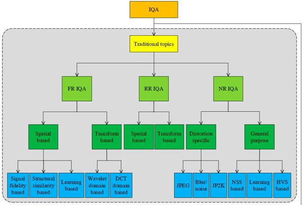 |
Surveys for Perceptual Quality Assessment
- [SCIS 2024] Perceptual Video Quality Assessment: A Survey
X. Min, H. Duan, W. Sun, Y. Zhu and G. Zhai, SCIENCE CHINA Information Sciences, 2024. ESI Highly Cited Paper
- [SCIS 2020] Perceptual Image Quality Assessment: A Survey
G. Zhai, and X. Min, SCIENCE CHINA Information Sciences, 2020. Hot Paper Award, ESI Highly Cited Paper
- [CSUR 2022] Screen Content Quality Assessment: Overview, Benchmark, and Beyond
X. Min, K. Gu, G. Zhai, X. Yang, W. Zhang, P. L. Callet, and C. W. Chen, ACM Computing Surveys, 2022. ESI Highly Cited Paper
|
|
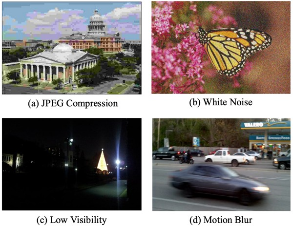 |
Image Quality Assessment in-the-Wild
- [TCSVT 2025] Exploring Rich Subjective Quality Information for Image Quality Assessment in the Wild
X. Min, Y. Gao, Y. Cao, G. Zhai, W. Zhang, H. Sun, C. W. Chen, IEEE TCSVT, 2025. [Code] ESI Highly Cited Paper
- [JSTSP 2023] Blind Quality Assessment for in-the-Wild Images via Hierarchical Feature Fusion and Iterative Mixed Database Training
W. Sun, X. Min, D. Tu, S. Ma, and G. Zhai, IEEE JSTSP, 2023. [Code] ESI Highly Cited Paper
- [TMM 2022] Blind Image Quality Assessment Via Cross-View Consistency
Y. Zhu, Y. Li, W. Sun, X. Min, G. Zhai, and X. Yang, IEEE TMM, 2022.
- [NeurIPS 2022] Perceptual Attacks of No-Reference Image Quality Models with Human-in-the-Loop
W. Zhang, D. Li, X. Min, G. Zhai, G. Guo, X. Yang, and K. Ma, NeurIPS, 2022. [Code]
|
|
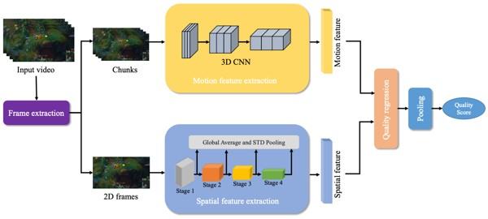 |
Video Quality Assessment in-the-Wild
- [MM 2022] A Deep Learning based No-reference Quality Assessment Model for UGC Videos
W. Sun, X. Min, W. Lu, and G. Zhai, ACM MM, 2022. [Code]
- [TPAMI 2024] Analysis of Video Quality Datasets via Design of Minimalistic Video Quality Models
W. Sun, W. Wen, X. Min, L. Lan, G. Zhai, and K. Ma, IEEE TPAMI, 2024. [Code]
- [CVPR 2023] MD-VQA: Multi-Dimensional Quality Assessment for UGC Live Videos
Z. Zhang, W. Wu, W. Sun, D. Tu, W. Lu, X. Min, Y. Chen, and G. Zhai, IEEE/CVF CVPR, 2023. [Database]
- [ICMEW 2021] Deep Learning Based Full-Reference and No-Reference Quality Assessment Models for Compressed UGC Videos
W. Sun, T. Wang, X. Min, F. Yi, and G. Zhai, IEEE ICMEW, 2021. [Code] First Place Award of IEEE ICME 2021 Grand Challenge on Quality Assessment of Compressed UGC Videos
|
|
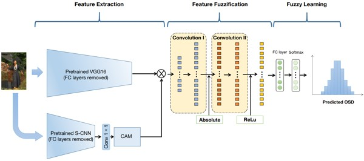 |
Blind IQA with Opinion Score Distributions
- [TIP 2025] Blind Image Quality Assessment by Gaussian Mixture Distribution
Y. Gao, X. Min, Y. Cao, W. Lin, B. S. Lee, and G. Zhai, IEEE TIP, 2025. [Code]
- [TCSVT 2025] No-Reference Image Quality Assessment: Obtain MOS From Image Quality Score Distribution
Y. Gao, X. Min, Y. Cao, X. Liu, and G. Zhai, IEEE TCSVT, 2025.
- [MM 2022] Image Quality Assessment: From Mean Opinion Score to Opinion Score Distribution
Y. Gao, X. Min, Y. Zhu, J. Li, X.-P. Zhang, and G. Zhai, ACM MM, 2022. [Code]
- [TCSVT 2023] Blind Image Quality Assessment: A Fuzzy Neural Network for Opinion Score Distribution Prediction
Y. Gao, X. Min, Y. Zhu, X.-P. Zhang, and G. Zhai, IEEE TCSVT, 2023. [Code]
- [TCSVT 2023] Image Quality Score Distribution Prediction via Alpha Stable Model
Y. Gao, X. Min, W. Zhu, X.-P. Zhang, and G. Zhai, IEEE TCSVT, 2023. [Database & Code]
|
|
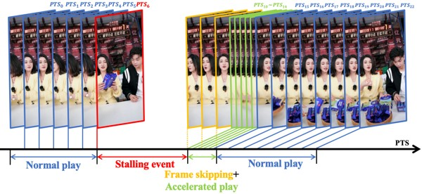 |
Video Streaming QoE Prediction
- [TCSVT 2024] Continuous and Overall Quality of Experience Evaluation for Streaming Video Based on Rich Features Exploration and Dual-Stage Attention
Z. Jia, X. Min, W. Sun, and G. Zhai, IEEE TCSVT, 2024.
- [TCSVT 2026] Subjective and Objective Quality-of-Experience Evaluation Study for Live Video Streaming
Z. Zhu, W. Sun, J. Jia, W. Wu, S. Deng, K. Li, X. Min, J. Wang, Y. Chen, and G. Zhai, IEEE TCSVT, 2026.
- [TOMM 2026] Subjective and Objective QoE Assessment for Real-Time Streaming Interactive Digital Human
Y. Zhou, J. Wan, F. Wen, Z. Zhang, X. Liu, Y. Zhou, J. Cao, Y. Wang, X. Min, and G. Zhai, ACM TOMM, 2026. [Code]
|
|
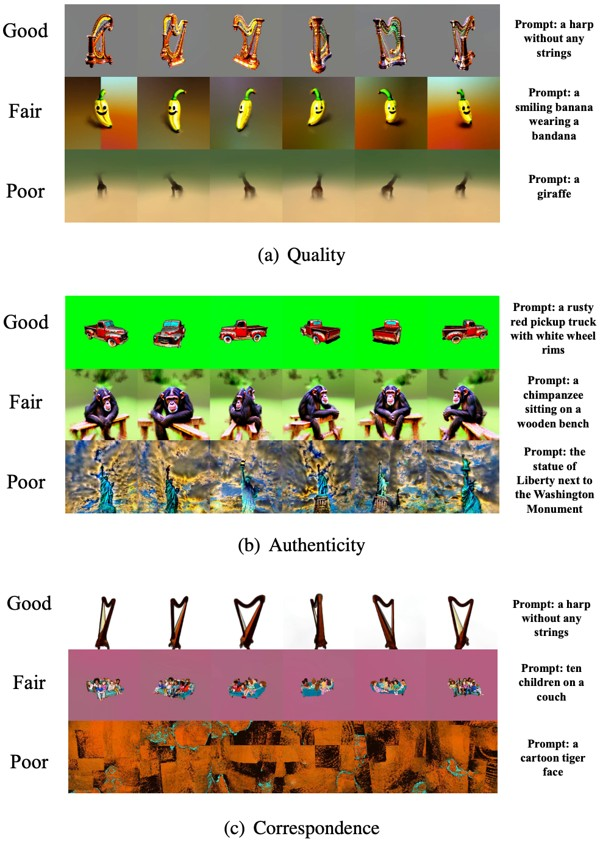 |
3D Model (Point Cloud, Mesh) Quality Assessment
- [TIP 2026] Multi-Dimensional Quality Assessment for Single-Image-to-3D Contents: Dataset and Model
K. Fu, H. Duan, Z. Zhang, J. Liu, Y. Liu, X. Liu, J. Wang, X. Min, P. L. Callet, and G. Zhai, IEEE TIP, 2026.
- [TMM 2025] Multi-Dimensional Quality Assessment for Text-to-3D Assets: Dataset and Model
K. Fu, H. Duan, Z. Zhang, X. Liu, X. Min, J. Wang, and G. Zhai, IEEE TMM, 2025. [Database]
- [TIP 2025] Advancing Zero-Shot Digital Human Quality Assessment Through Text-Prompted Evaluation
Z. Zhang, W. Sun, Y. Zhou, H. Wu, C. Li, X. Min, X. Liu, G. Zhai, and W. Lin, IEEE TIP, 2025. [Database]
- [TBC 2024] Quality-of-Experience Evaluation for Digital Twins in 6G Network Environments
Z. Zhang, Y. Zhou, L. Teng, W. Sun, C. Li, X. Min, X.-P. Zhang, and G. Zhai, IEEE TBC, 2024. Best Paper Award
- [MM 2024] LMM-PCQA: Assisting Point Cloud Quality Assessment with LMM
Z. Zhang, H. Wu, Y. Zhou, C. Li, W. Sun, C. Chen, X. Min, X. Liu, W. Lin, and G. Zhai, ACM MM, 2024. [Code] Best Paper Nomination
- [TOMM 2024] GMS-3DQA: Projection-Based Grid Mini-patch Sampling for 3D Model Quality Assessment
Z. Zhang, W. Sun, H. Wu, Y. Zhou, C. Li, Z. Chen, X. Min, G. Zhai, and W. Lin, ACM TOMM, 2024. [Code]
- [TMM 2023] Evaluating Point Cloud From Moving Camera Videos: A No-Reference Metric
Z. Zhang, W. Sun, Y. Zhu, X. Min, W. Wu, Y. Chen, and G. Zhai, IEEE TMM, 2023. [Code] ESI Highly Cited Paper
- [TOMM 2025] MM-PCQA+: Advancing Multi-Modal Learning for Point Cloud Quality Assessment
Z. Zhang, Y. Zhou, C. Li, W. Sun, X. Min, X. Liu, and G. Zhai, ACM TOMM, 2025.
- [IJCAI 2023] MM-PCQA: Multi-Modal Learning for No-reference Point Cloud Quality Assessment
Z. Zhang, W. Sun, X. Min, Q. Zhou, J. He, Q. Wang, and G. Zhai, IJCAI, 2023. [Code]
- [TCSVT 2022] No-Reference Quality Assessment for 3D Colored Point Cloud and Mesh Models
Z. Zhang, W. Sun, X. Min, T. Wang, W. Lu, and G. Zhai, IEEE TCSVT, 2022. [Code]
|
|
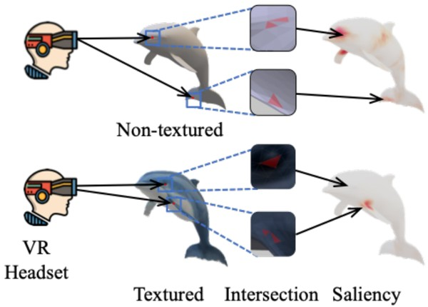 |
Mesh Saliency Prediction
- [CVPR 2025] Mesh Mamba: A Unified State Space Model for Saliency Prediction in Non-Textured and Textured Meshes
K. Zhang, D. Zhu, X. Min, and G. Zhai, IEEE/CVF CVPR, 2025. [Code]
- [AAAI 2025] Textured Mesh Saliency: Bridging Geometry and Texture for Human Perception in 3D Graphics
K. Zhang, D. Zhu, X. Min, and G. Zhai, AAAI, 2025. [Database & Code]
- [TVCG 2025] Unified Approach to Mesh Saliency: Evaluating Textured and Non-Textured Meshes Through VR and Multifunctional Prediction
K. Zhang, D. Zhu, X. Min, and G. Zhai, IEEE TVCG, 2025.
- [TOMM 2025] Elevating Mesh Saliency in VR: Introducing a Novel Prediction Network and Dataset
K. Zhang, M. He, D. Zhu, K. Zhu, X. Min, and G. Zhai, ACM TOMM, 2025.
|
|
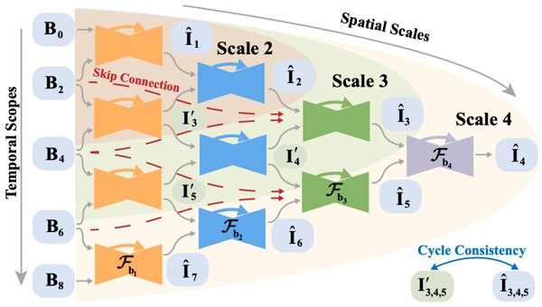 |
Image/Video Enhancement/Restoration/Interpolation etc.
- [CVPR 2020] Blurry Video Frame Interpolation
W. Shen, W. Bao, G. Zhai, L. Chen, X. Min, and Z. Gao, IEEE/CVF CVPR, 2020. [Project & Code]
- [TIP 2021] Video Frame Interpolation and Enhancement via Pyramid Recurrent Framework
W. Shen, W. Bao, G. Zhai, L. Chen, X. Min, and Z. Gao, IEEE TIP, 2021. [Project & Code]
- [ICCV 2021] Self-Conditioned Probabilistic Learning of Video Rescaling
Y. Tian, G. Lu, X. Min, Z. Che, G. Zhai, G. Guo, and Z. Gao, IEEE/CVF ICCV, 2021. [Code]
- [TMM 2022] Develop then Rival: A Human Vision-Inspired Framework for Superimposed Image Decomposition
H. Duan, W. Shen, X. Min, Y. Tian, J.-H. Jung, X. Yang, and G. Zhai, IEEE TMM, 2022.
- [TGRS 2022] Implicit Neural Representation Learning for Hyperspectral Image Super-Resolution
K. Zhang, D. Zhu, X. Min, and G. Zhai, IEEE TGRS, 2022. [Code]
- [TMC 2022] Dynamic Backlight Scaling Considering Ambient Luminance for Mobile Videos on LCD Displays
W. Sun, X. Min, G. Zhai, K. Gu, S. Ma, and X. Yang, IEEE TMC, 2022. [Database]
|
|
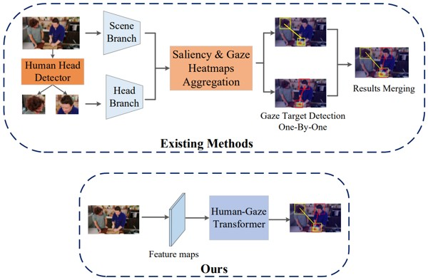 |
Human Gaze and Human-Object Interaction Detection
- [CVPR 2022] End-to-End Human-Gaze-Target Detection with Transformers
D. Tu, X. Min, H. Duan, G. Guo, G. Zhai, and W. Shen, IEEE/CVF CVPR, 2022.
- [TCSVT 2023] Un-Gaze: A Unified Transformer for Joint Gaze-Location and Gaze-Object Detection
D. Tu, W. Shen, W. Sun, X. Min, G. Zhai, and C. W. Chen, IEEE TCSVT, 2023.
- [NeurIPS 2022] Video-based Human-Object Interaction Detection from Tubelet Tokens
D. Tu, W. Sun, X. Min, G. Zhai, and W. Shen, NeurIPS, 2022.
- [ECCV 2022] Iwin: Human-Object Interaction Detection via Transformer with Irregular Windows
D. Tu, X. Min, H. Duan, G. Guo, G. Zhai, and W. Shen, ECCV, 2022.
|
|
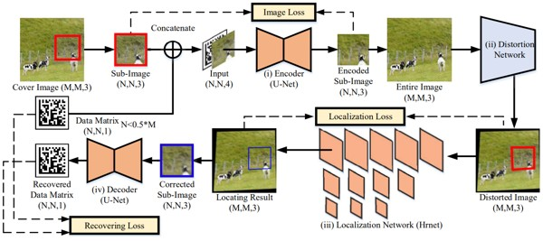 |
Information Hiding
- [TOMM 2024] Hidden Barcode in Sub-Images with Invisible Locating Marker
J. Jia, Z. Gao, Y. Yang, W. Sun, D. Zhu, X. Liu, X. Min, and G. Zhai, ACM TOMM, 2024.
- [CVPR 2022] Learning Invisible Markers for Hidden Codes in Offline-to-online Photography
J. Jia, Z. Gao, D. Zhu, X. Min, G. Guo, and G. Zhai, IEEE/CVF CVPR, 2022.
- [TCYB 2022] RIHOOP: Robust Invisible Hyperlinks in Offline and Online Photographs
J. Jia, Z. Gao, K. Chen, M. Hu, X. Min, G. Zhai, and X. Yang, IEEE TCYB, 2022.
- [TMM 2023] RIVIE: Robust Inherent Video Information Embedding
J. Jia, Z. Gao, D. Zhu, X. Min, M. Hu, and G. Zhai, IEEE TMM, 2023.
|
|
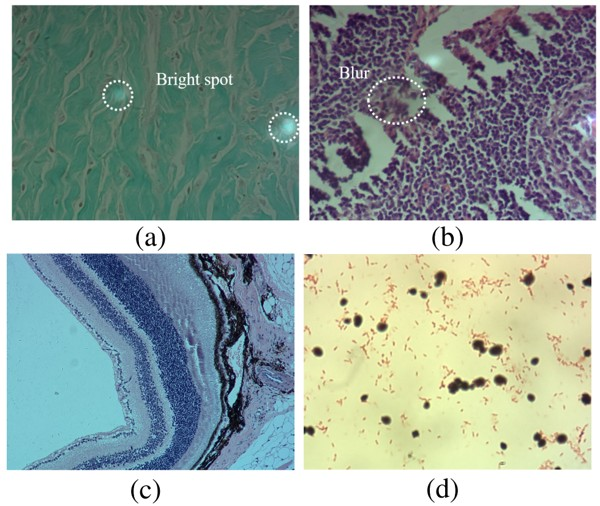 |
Quality Assessment for Specific Applications
- [TIP 2020] A Metric for Light Field Reconstruction, Compression, and Display Quality Evaluation
X. Min, J. Zhou, G. Zhai, P. L. Callet, X. Yang, and X. Guan, IEEE TIP, 2020. [Code]
- [TCSVT 2024] BAND-2k: Banding Artifact Noticeable Database for Banding Detection and Quality Assessment
Z. Chen, W. Sun, J. Jia, F. Lu, Z. Zhang, J. Liu, R. Huang, X. Min, and G. Zhai, IEEE TCSVT, 2024. [Code]
- [TCSVT 2025] Subjective and Objective Quality Assessment of Display Content Videos
Y. Huang, F. Lu, H. Yu, K. Zhang, W. Sun, X. Min, and G. Zhai, IEEE TCSVT, 2025.
- [TCSVT 2025] Full-Reference and No-Reference Quality Assessment for Video Frame Interpolation
J. Han, X. Min, J. Jia, Y. Gao, X. Liu, and G. Zhai, IEEE TCSVT, 2025.
- [MM 2025] RGC-VQA: An Exploration Database for Robotic-Generated Video Quality Assessment
J. Jin, J. Ying, H. Duan, L. Yang, S. Wu, Y. Li, Y. Zheng, X. Min, and G. Zhai, ACM MM, 2025. [Database]
- [CVPR 2025] Image Quality Assessment: From Human to Machine Preference
C. Li, Y. Tian, X. Ling, Z. Zhang, H. Duan, H. Wu, Z. Jia, X. Liu, X. Min, G. Lu, W. Lin, and G. Zhai, IEEE/CVF CVPR, 2025. [Database]
- [ICCV 2025] FPEM: Face Prior Enhanced Facial Attractiveness Prediction for Live Videos with Face Retouching
H. Li, X. Ren, H. Yu, Y. Chen, K. Li, L. Wang, X. Min, H. Duan, G. Zhai, and X. Liu, IEEE/CVF ICCV, 2025.
- [TMI 2023] Blind Image Quality Assessment for Pathological Microscopic Image under Screen and Immersion Scenarios
Y. Guo, M. Hu, X. Min, Y. Wang, M. Dai, G. Zhai, X.-P. Zhang, and X. Yang, IEEE TMI, 2023. [Database & Code]
- [TBC 2023] Deep Neural Network for Blind Visual Quality Assessment of 4K Content
W. Lu, W. Sun, X. Min, W. Zhu, Q. Zhou, J. He, Q. Wang, Z. Zhang, T. Wang, and G. Zhai, IEEE TBC, 2023.
- [TBC 2020] A Wavelet-Predominant Algorithm Can Evaluate Quality of THz Security Image and Identify Its Usability
M. Hu, G. Zhai, R. Xie, X. Min, Q. Li, and X. Yang, IEEE TBC, 2020. [Database]
- [ICIP 2022] Surveillance Video Quality Assessment Based on Quality Related Retraining
Z. Zhang, W. Lu, W. Sun, X. Min, T. Wang, and G. Zhai, IEEE ICIP, 2022. The First Prize of the IEEE ICIP Grand Challenge - Video Distortion Detection and Classification in the Context of Video Surveillance
|
|
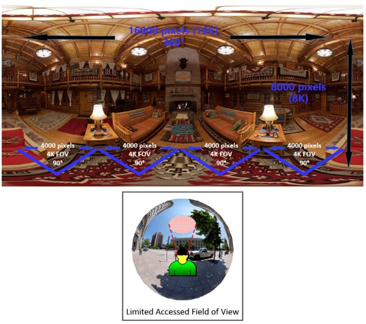 |
Visual Attention Prediction in Virtual Reality
- [TIP 2025] How Does Audio Influence Visual Attention in Omnidirectional Videos? Database and Model
Y. Zhu, H. Duan, K. Zhang, Y. Zhu, X. Zhu, L. Teng, X.Min, and G. Zhai, IEEE TIP, 2025. [Database & Code]
- [TIP 2025] From Haziness to Clarity: A Novel Iterative Memory-Retrospective Emergence Model for Omnidirectional Image Saliency Prediction
D. Zhu, K. Zhang, X. Min, G. Zhai, and X. Yang, IEEE TIP, 2025.
- [TCSVT 2025] ScanDTM: A Novel Dual-Temporal Modulation Scanpath Prediction Model for Omnidirectional Images
D. Zhu, K. Zhang, X. Min, G. Zhai, and X. Yang, IEEE TCSVT, 2025.
- [TCSVT 2025] Future Fixation Sequence Prediction for Audio-Visual 360° Videos
Y. Zhu, G. Zhai, X. Min, Y. Li, L. Teng, H. Duan, L. Yuan, and X. Yang, IEEE TCSVT, 2025. ESI Highly Cited Paper
- [TOMM 2026] MEScan360: A Memory-Enhanced Scanpath Prediction Model for Omnidirectional Images
Y. Zhang, D. Zhu, K. Zhang, K. Zhu, N. Zhang, X. Min, and G. Zhai, ACM TOMM, 2026.
- [TOMM 2020] Learning a Deep Agent to Predict Head Movement in 360-Degree Images
Y. Zhu, G. Zhai, X. Min, and J. Zhou, ACM TOMM, 2020.
- [TMM 2020] The Prediction of Saliency Map for Head and Eye Movements in 360 Degree Images
Y. Zhu, G. Zhai, X. Min, and J. Zhou, IEEE TMM, 2020.
- [SPIC] The Prediction of Head and Eye Movement for 360 Degree Images
Y. Zhu, G. Zhai, and X. Min, SPIC, 2018. Special Award of IEEE ICME 2017 Salient360! Grand Challenge
- [TCSVT 2022] Viewing Behavior Supported Visual Saliency Predictor for 360 Degree Videos
Y. Zhu, G. Zhai, Y. Yang, H. Duan, X. Min, and X. Yang, IEEE TCSVT, 2022. Grand Prize of IEEE ICME 2018 Salient360! Grand Challenge
- [TMM 2023] Unified Audio-visual Saliency Model for Omnidirectional Videos with Spatial Audio
D. Zhu, K. Zhang, N. Zhang, Q. Zhou, X. Min, G. Zhai, and X. Yang, IEEE TMM, 2023.
|
|
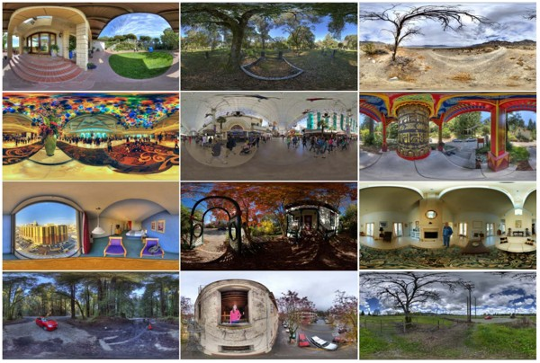 |
Quality Assessment in Virtual Reality
- [TIP 2025] Subjective and Objective Audio-Visual Quality Assessment for Omnidirectional Videos
X. Zhu, H. Duan, Y. Cao, Y. Zhu, Y. Zhu, J. Liu, X. Min, G. Zhai, and P. L. Callet, IEEE TIP, 2025.
- [TCSV 2025T] Quality Assessment and Distortion-Aware Saliency Prediction for AI-Generated Omnidirectional Images
L. Yang, H. Duan, J. Wang, J. Liu, M. Hu, X. Min, G. Zhai, and P. L. Callet, IEEE TCSVT, 2025. [Database]
- [JSTSP 2020] MC360IQA: The Multi-Channel CNN for Blind 360-Degree Image Quality Assessment
W. Sun, X. Min, G. Zhai, K. Gu, H. Duan, and S. Ma, IEEE JSTSP, 2020. [Code]
[Database]
- [ISCAS 2018] Perceptual Quality Assessment of Omnidirectional Images
H. Duan, G. Zhai, X. Min, Y. Zhu, Y. Fang, X. Yang, IEEE ISCAS, 2018. [Database]
- [JSTSP 2023] Attentive Deep Image Quality Assessment for Omnidirectional Stitching
H. Duan, X. Min, W. Sun, Y. Zhu, X.-P. Zhang, and G. Zhai, IEEE JSTSP, 2023. [Database(TeraBox)]
[Database(BaiduCloud)]
|
|
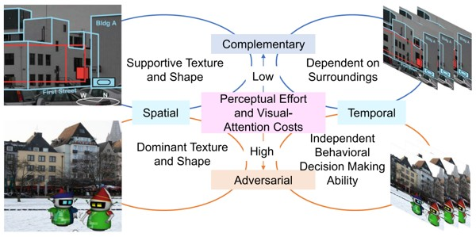 |
Attention and Experience Prediction in Augmented Reality
- [TVCG 2025] ESIQA: Perceptual Quality Assessment of Vision-Pro-based Egocentric Spatial Images
X. Zhu, L. Yang, H. Duan, X. Min, G. Zhai, P. L. Callet, IEEE TVCG, 2025. [Database & Code]
- [MM 2022] Saliency in Augmented Reality
H. Duan, W. Shen, X. Min, D. Tu, J. Li, and G. Zhai, ACM MM, 2022. [Database & Code]
- [TOMM 2023] Toward Visual Behavior and Attention Understanding for Augmented 360 Degree Videos
Y. Zhu, X. Min, D. Zhu, G. Zhai, X. Yang, W. Zhang, K. Gu, and J. Zhou, ACM TOMM, 2023.
- [TIP 2022] Confusing Image Quality Assessment: Toward Better Augmented Reality Experience
H. Duan, X. Min, Y. Zhu, G. Zhai, X. Yang, and P. L. Callet, IEEE TIP, 2022. [Database & Code]
- [BMSB 2022] Augmented Reality Image Quality Assessment Based on Visual Confusion Theory
H. Duan, L. Guo, W. Sun, X. Min, L. Chen, and G. Zhai, IEEE BMSB, 2022. [Database & Code] Best Paper Award
|
|
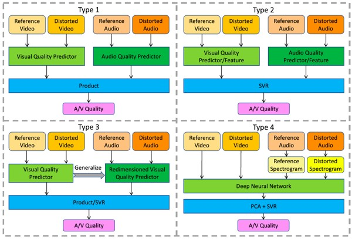 |
Audio-Visual Quality Assessment
- [TCSVT 2025] UNQA: Unified No-Reference Quality Assessment for Audio, Image, Video, and Audio-Visual Content
Y. Cao, X. Min, Y. Gao, W. Sun, L. Ye, W. Lin, and G. Zhai, IEEE TCSVT, 2025.
- [TIP 2023] Attention-Guided Neural Networks for Full-Reference and No-Reference Audio-Visual Quality Assessment
Y. Cao, X. Min, W. Sun, and G. Zhai, IEEE TIP, 2023. [Code] ESI Highly Cited Paper
- [TIP 2023] Subjective and Objective Audio-Visual Quality Assessment for User Generated Content
Y. Cao, X. Min, W. Sun, and G. Zhai, IEEE TIP, 2023. [Database & Code]
- [TIP 2020] Study of Subjective and Objective Quality Assessment of Audio-Visual Signals
X. Min, G. Zhai, J. Zhou, M. C.Q. Farias, and A. C. Bovik, IEEE TIP, 2020. [Code]
[LIVE-SJTU A/V-QA Database] ESI Highly Cited Paper
|
|
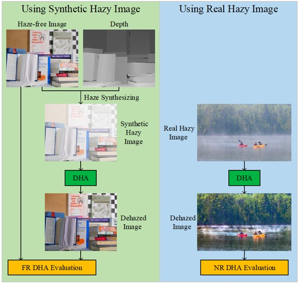 |
Quality Assessment for Enhancement (Haze, Light, Stability, etc.)
- [TMM 2019] Quality Evaluation of Image Dehazing Methods Using Synthetic Hazy Images
X. Min, G. Zhai, K. Gu, Y. Zhu, J.o Zhou, G. Guo, X. Yang, X. Guan, and W. Zhang, IEEE TMM, 2019. [Code: DEHAZEfr]
[Database: SHRQ]
- [TITS 2019] Objective Quality Evaluation of Dehazed Images
X. Min, G. Zhai, K. Gu, X. Yang, and X. Guan, IEEE TITS, vol. 20, no. 9, pp. 2879-2892, 2019. [Code: DHQI]
[Database: DHQ]
[Database: rDHAZY]
[Database: rFRIDA] ESI Highly Cited Paper
- [TITS 2020] HazDesNet: An End-to-End Network for Haze Density Prediction
J. Zhang, X. Min, Y. Zhu, G. Zhai, J. Zhou, X. Yang, and W. Zhang, IEEE TITS, 2020. [Code & Database]
- [TOMM 2021] Perceptual Quality Assessment of Low-light Image Enhancement
G. Zhai, W. Sun, X. Min, and J. Zhou, ACM TOMM, 2021. [Code: LIEQA] [Database: LIEQ]
- [MM 2023] StableVQA: A Deep No-Reference Quality Assessment Model for Video Stability
T. Kou, X. Liu, W. Sun, J. Jia, X. Min, G. Zhai, and N. Liu, ACM MM, 2023. [Code]
- [CVPRW 2023] VDPVE: VQA Dataset for Perceptual Video Enhancement
Y. Gao, Y. Cao, T. Kou, W. Sun, Y. Dong, X. Liu, X. Min, and G. Zhai, IEEE/CVF CVPRW, 2023. [Challenge]
[Database]
|
|
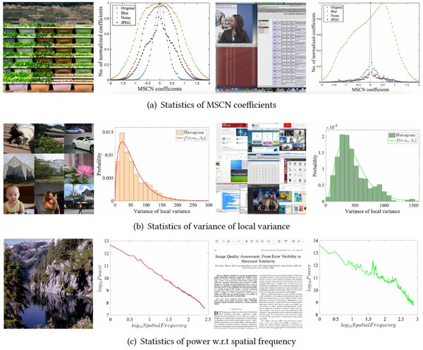 |
Screen Content Quality Assessment
- [CSUR 2022] Screen Content Quality Assessment: Overview, Benchmark, and Beyond
X. Min, K. Gu, G. Zhai, X. Yang, W. Zhang, P. L. Callet, and C. W. Chen, ACM Computing Surveys, 2022.
ESI Highly Cited Paper
- [TIP 2017] Unified Blind Quality Assessment of Compressed Natural, Graphic, and Screen Content Images
X. Min, K. Ma, K. Gu, G. Zhai, Z. Wang, and W. Lin, IEEE TIP, 2017. [Project]
[Code: UCA]
[Database: CCT] ESI Hot Paper, ESI Highly Cited Paper
- [TBC 2021] Subjective and Objective Quality Assessment of Compressed Screen Content Videos
T. Li, X. Min, H. Zhao, G. Zhai, Y. Xu, and W. Zhang, IEEE TBC, 2021. [Database]
- [TOMM 2023] Subjective and Objective Quality Assessment for in-the-Wild Computer Graphics Images
Z. Zhang, W. Sun, Y. Zhou, J. Jia, Z. Zhang, J. Liu, X. Min, and G. Zhai, ACM TOMM, 2023.
- [ToG 2022] A Deep Learning Based Multi-Dimensional Aesthetic Quality Assessment Method for Mobile Game Images
T. Wang, W. Sun, W. Wu, Y. Chen, X. Min, W. Lu, Z. Zhang, and G. Zhai, IEEE ToG, 2022.
- [TVCG 2018] Evaluating Quality of Screen Content Images Via Structural Variation Analysis
K. Gu, J. Qiao, X. Min, G. Yue, W. Lin, and D. Thalmann, IEEE TVCG, 2018. [Code]
- [TIE 2017] A Fast Reliable Image Quality Predictor by Fusing Micro- and Macro-Structures
K. Gu, L. Li, H. Lu, X. Min, and W. Lin, IEEE TIE, 2017. [Code] ESI Highly Cited Paper
- [SP 2018] Saliency-Induced Reduced-Reference Quality Index for Natural Scene and Screen Content Images
X. Min, K. Gu, G. Zhai, M. Hu, and X. Yang, SP, 2018. [Code]
|
|
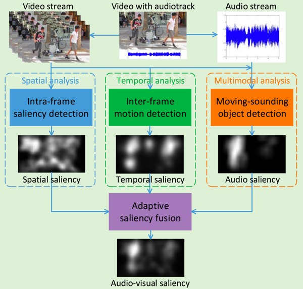 |
Multimodal (Audio, Visual, Text, etc.) Saliency Prediction
- [TIP 2020] A Multimodal Saliency Model for Videos With High Audio-Visual Correspondence
X. Min, G. Zhai, J. Zhou, X.-P. Zhang, X. Yang, and X. Guan, IEEE TIP, 2020. [Code]
[AVA Database] ESI Highly Cited Paper
- [TOMM 2017] Fixation Prediction through Multimodal Analysis
X. Min, G. Zhai, K. Gu, and X. Yang, ACM TOMM, 2017. [Code]
[Database]
- [TIP 2020] How is Gaze Influenced by Image Transformations? Dataset and Model
Z. Che, A. Borji, G. Zhai, X. Min, G. Guo, and P. L. Callet, IEEE TIP, 2020. [Code]
[Database]
- [TOMM 2023] A Novel Lightweight Audio-visual Saliency Model for Videos
D. Zhu, X. Shao, Q. Zhou, X. Min, G. Zhai, and X. Yang, ACM TOMM, 2023.
- [TETCI 2024] MTCAM: A Novel Weakly-Supervised Audio-Visual Saliency Prediction Model With Multi-Modal Transformer
D. Zhu, K. Zhu, W. Ding, N. Zhang, X. Min, G. Zhai, and X Yang, IEEE TETCI, 2024.
- [TPAMI 2025] Developing Evolving Adaptability in Biological Intelligence: A Novel Biologically-Inspired Continual Learning Model for Video Saliency Prediction
D. Zhu, K. Zhang, K. Zhu, N. Zhang, X. Min, G. Zhai, and X. Yang, IEEE TPAMI, 2025.
- [TIP 2024] MTCAM: A Novel Weakly-Supervised Audio-Visual Saliency Prediction Model With Multi-Modal Transformer
Y. Sun, X. Min, H. Duan, and G. Zhai, IEEE TIP, 2024. [Database]
- [ISCAS 2023] The Influence of Text-guidance on Visual Attention
Y. Sun, X. Min, H. Duan, and G. Zhai, IEEE ISCAS/, 2023. IEEE MSA-TC Best Paper Award - Honorable Mention
|
|
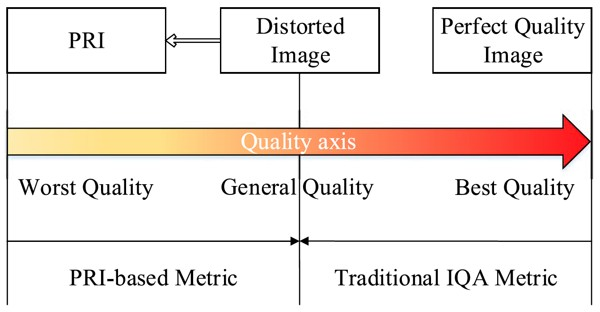 |
BIQA Based on Pseudo References
- [TMM 2018] Blind Quality Assessment Based on Pseudo Reference Image
X. Min, K. Gu, G. Zhai, J. Liu, X. Yang, and C. W. Chen, IEEE TMM, 2018. [Code: BPRI] Best Paper Runner-up Award, ESI Highly Cited Paper
- [TBC 2018] Blind Image Quality Estimation via Distortion Aggravation
X. Min, G. Zhai, K. Gu, Y. Liu, and X. Yang, IEEE TBC, 2018. [Code: BMPRI] ESI Highly Cited Paper
- [ICME 2016] Blind Quality Assessment of Compressed Images via Pseudo Structural Similarity
X. Min, G. Zhai, K. Gu, Y. Fang, X. Yang, X. Wu, J. Zhou, and X. Liu, IEEE ICME, 2016. [Code] Best Student Paper Award
|
|